下的节点 着色器 菜单用于定义场景中几何对象的材质属性，包括从对象表面反射回相机的光线质量。使用这些节点，您可以控制对象似乎是由什么材料组成的。
您还可以一个接一个地添加几个着色器节点，以产生更复杂的效果。为此，应该在着色器节点上使用未标记的输入。
应用的材质特性设置会影响场景的渲染输出。
可以在脚本中的以下位置插入 3D 着色器节点:
• 在您用于表面纹理的 2D 图像和创建表面的 3D 对象节点之间，或者
• 在使用 ApplyMaterial 节点的 3D 对象节点之后。这是将全局材质应用于所有对象的好方法。请参阅 使用 ApplyMaterial 节点应用材质 .
您可以使用 地图 用于输入遮罩图像的连接器，以限制材料更改的效果。
|
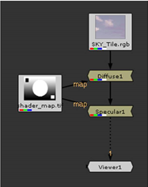 |
| 漫反射和镜面节点。 |
注意: 在 2D 视图中，只能看到对对象的材质属性所做更改的效果。
ApplyMaterial 节点应用来自 垫子 输入到您的 3D 对象。
| 1。 | 选择 3D > 着色器 > 应用材料 将 ApplyMaterial 节点插入脚本。 |
| 2. | 将 ApplyMaterial 节点的未命名输入连接到几何图形 (例如，球体、 ReadGeo 或 ModelBuilder 节点)。 |
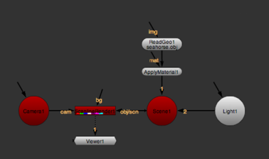
提示: 如果要将全局材质应用于多个对象，还可以将未命名的输入连接到 MergeGeo 节点。这将覆盖应用于单个几何节点的任何材质，然后再将它们合并。
| 3. | 将材质 (例如，2D 纹理图像、基本材质节点或线框节点) 连接到 ApplyMaterial 节点的 垫子 输入。 |
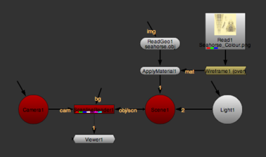
默认情况下，ApplyMaterial 应用来自 垫子 输入到所有传入的几何对象。
| 4. | 如果使用 ModelBuilder 创建几何图形，或使用 ReadGeo 导入 Alembic 文件，则可以选择仅将材质应用于传入几何图形中的特定对象。为此，打开 ApplyMaterial 属性并设置 过滤器 到 名称 。这允许您告诉 ApplyMaterial 忽略任何与右侧过滤器不匹配的几何图形。 |
注意: 如果使用第三方插件创建或导入几何图形，并为几何图形对象添加名称属性，则也可以将材质限制到特定对象。
| 5. | 要设置如何过滤传入的几何对象，请设置 “” 旁边的下拉菜单 名称 至: |
• 等于 -在名称与过滤器名称字段中的字符串完全匹配的任何对象上设置材质。
• 不等于 -在名称与 “过滤器名称” 字段中的字符串不完全匹配的任何对象上设置材质。
• 包含 -为名称在过滤器名称字段中包含字符串的任何对象设置材质。
当对象名称有某种结构时，这可能很有用。例如，如果您有像/Root/Chair/Seat 、/Root/Chair/Back 和/Root/Table 这样的对象，您可以选择 包含 并将过滤器名称字段设置为 椅子 将材料涂抹在椅子的所有部分，同时保持桌子不动。
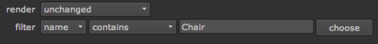
• 不包含 -为名称在过滤器名称字段中不包含字符串的任何对象设置材质。
| 6. | 要设置过滤器名称，请直接在文本输入字段中键入名称或使用 选择 按钮打开 对象名称选择器 对话框，并从传入几何对象的列表中选择过滤器名称。 |
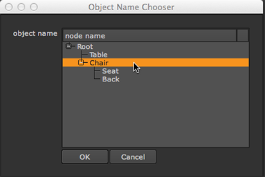
提示: 你也可以 Ctrl / Cmd 单击或 转变 点击 对象名称选择器 对话框选择多个对象。
“漫反射” 节点允许您在照明时调整材质的颜色。当表面远离光线时，材料看起来更暗，因为光线不会落在它上面。
| 1。 | 选择 3D > 着色器 > 扩散 将漫反射节点插入到脚本中。 |
| 2. | 将漫反射节点放置在 2D 纹理图像和 3D 对象节点之间，或者将其连接到应用材质节点 垫子 输入。 |
| 3. | 在漫反射属性中，使用 渠道 下拉菜单选择要处理的频道。 |
| 4. | 调整 白色 滑块控制漫反射颜色。默认情况下，这是灰度图，但您也可以调整单个 r 、 g 和 b 值。值越高，材料就越亮。 |
|
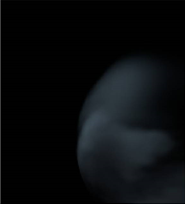 |
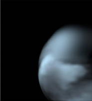 |
|
扩散: 低 白色 价值。 |
扩散: 高 白色 价值。 |
您可以使用镜面反射节点来控制材质上的高光看起来有多亮多宽。视点的位置很重要: 镜面高光沿着反射的直接角度最亮。
| 1。 | 选择 3D > 着色器 > 镜面 将高光节点插入到脚本中。 |
| 2. | 将镜面反射节点放置在 2D 纹理图像和 3D 对象节点之间，或者将其连接到应用材质节点 垫子 输入。 |
| 3. | 在镜面反射属性中，使用 渠道 下拉菜单选择要处理的频道。 |
| 4. | 调整 白色 滑块控制镜面高光的亮度。价值越高，材料看起来就越闪亮。 |
|
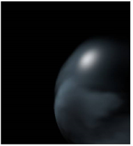 |
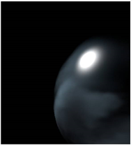 |
|
低 白色 价值。 |
高 白色 价值。 |
| 5. | 要控制高光的宽度，请调整 Min shininess 和 最大光泽 滑块。 |
|
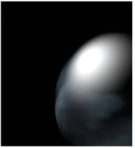 |
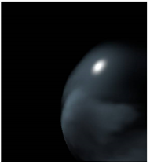 |
|
低 光泽 价值。 |
高 光泽 价值。 |
| 6. | 如有必要，调整 闪光通道 控制如何使用输入通道将黑白值映射到 Min shininess 和 最大光泽 参数时 MapSh 输入已连接。选择 红色 要使用红色通道进行映射, 绿色 要使用绿色通道, 蓝色 要使用蓝色通道, 亮度 使用亮度，或 平均 rgb 使用红色、绿色和蓝色通道的平均值。 |
可以使用 “发射” 节点来模拟灯或其他发光源。
| 1。 | 选择 3D > 着色器 > 排放 将发射节点插入脚本。 |
| 2. | 在发射属性中，使用 渠道 下拉菜单选择要处理的频道。 |
| 3. | 调整 排放 滑块可更改曲面非照明区域的亮度。 |
值越高，材料发出的光线就越多，看起来就越亮。
基本材质节点是漫反射、镜面反射和发射节点的组合，允许您从单个属性面板控制材质的所有三个方面。
| 1。 | 选择 3D > 着色器 > 基本材料 将 BasicMaterial 节点插入脚本。 |
| 2. | 将基本材质节点放置在 2D 纹理图像和 3D 对象节点之间，或者将其连接到 ApplyMaterial 节点 垫子 输入。 |
| 3. | BasicMaterial 节点有几个贴图输入，您可以使用它们来屏蔽节点的效果。使用: |
• MapD 为了调节漫反射组件,
• 地图 要调整镜面反射组件,
• MapE 调节发射组件，和
• MapSh 调整光泽值。
| 4. | 在基本材质属性中，使用 渠道 下拉菜单选择要处理的频道。 |
| 5. | 调整 排放 更改材质发出的灯光的颜色。请注意，当您将图像连接到 BasicMaterial 节点的未标记输入并调整此值时，您需要查看渲染的 2D 图像以查看更改的效果。更改发射值对 3D 查看器没有任何影响。 |
| 6. | 调整 扩散 照明时控制材料的颜色。 |
| 7. | 使用 镜面 控制材料上的高光看起来有多亮。 |
| 8。 | 调整 Min shininess 和 最大光泽 设置最小和最大光泽值。如果您没有将图像连接到 MapSh 在节点的输入中，这些值的平均值用作材质的光泽值。 |
| 9. | 选择一个 闪光通道 控制如何使用输入通道将黑白值映射到 minshiness 和 maxshiness 参数 MapSh 输入已连接。选择 红色 要使用红色通道进行映射, 绿色 要使用绿色通道, 蓝色 要使用蓝色通道, 亮度 使用亮度，或 平均 rgb 使用红色、绿色和蓝色通道的平均值。 |
Phong 节点使用 Phong 算法平滑面之间的边缘。它为光滑的材料 (如蒙皮和其他有机表面) 提供逼真的阴影和高光。
| 1。 | 选择 3D > 着色器 > 庞 要插入 Phong 节点到您的脚本。 |
| 2. | 将 Phong 节点放置在 2D 纹理图像和 3D 对象节点之间，或者将其连接到应用材质节点 垫子 输入。 |
| 3. | Phong 节点有几个 地图 可用于屏蔽节点效果的输入。使用: |
• mapD to modulate the diffuse component,
• mapS to modulate the specular component,
• mapE to modulate the emission component, and
• mapSh to modulate the shininess value.
| 4. | 在 Phong 属性中，使用 渠道 下拉菜单选择要处理的频道。 |
| 5. | 调整 颜色 更改材质颜色。 |
| 6. | 调整 排放 更改材质发出的灯光的颜色。 |
| 7. | 要在照明时控制材料的颜色，请调整 扩散 . |
| 8。 | 要控制材料上的高光看起来有多亮，请调整 镜面。 |
| 9. | 要控制材料的光泽，请调整 光泽 . |
| 10. | 要设置最小和最大光泽值，请调整 Min shininess 和 最大光泽 。如果您没有将图像连接到 MapSh 在节点的输入中，这些值的平均值用作材质的光泽值。 |
| 11。 | 选择一个 闪光通道 控制如何使用输入通道将黑白值映射到 MinShininess 和 MaxShininess 参数时 MapSh 输入已连接。选择 红色 要使用红色通道进行映射, 绿色 要使用绿色通道, 蓝色 要使用蓝色通道, 亮度 使用亮度，或 平均 rgb 使用红色、绿色和蓝色通道的平均值。 |
线框节点允许您在几何对象或粒子模拟的表面上渲染线框覆盖。这可能是有用的，例如，如果你想:
• 检查纹理投影是否与几何图形正确对齐。
• 创建 3D 场景的快速渲染以检查对象的定位。
• 创建运动图形。
• 创建 “制作” 视频。
注意: 线框节点目前仅在使用 ScanlineRender 渲染 3D 场景时有效，RayRender 和 PrmanRender 不支持线框着色器。
| 1。 | 选择 3D > 着色器 > 线框 要插入 线框节点到脚本中。 |
| 2. | 将线框节点放置在 2D 纹理图像和 3D 对象节点之间，或者将其连接到应用材质节点 垫子 输入。 |
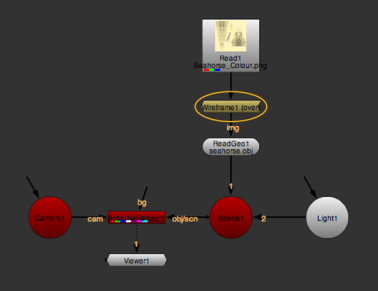
| 3. | 在线框属性中，使用 渠道 下拉菜单选择要处理的频道。 |
| 4. | 从 操作 下拉菜单中，选择如何将线框覆盖应用于几何图形: |
• 不透明 -在完全不透明的黑色输入几何图形上显示线框。
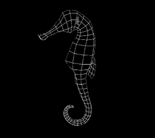
• 看穿 -在完全透明的几何图形上显示线框。
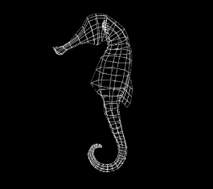
• 结束 -在输入着色器或纹理的顶部显示线框。
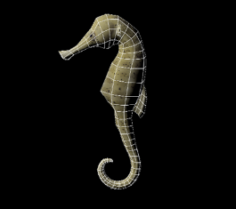
• 乘 -将线框与输入着色器或纹理相乘，并在完全透明的几何体上显示。
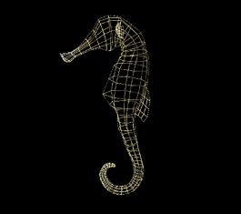
• 调制 -将标准漫反射着色应用于线框，并将其显示在输入着色器或纹理的顶部。这考虑到了场景中的任何灯光。
| 5. | 要设置线框线的宽度 (以像素为单位)，请调整 线条宽度 . |
| 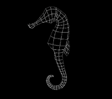 | 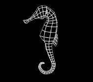 |
|
线条宽度 设置为 0.5。 |
线条宽度 设置为 3。 |
| 6. | 要设置线框线的颜色和透明度，请调整 线条颜色 . |
| 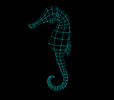 | |
|
线条颜色 设置为白色。 |
线条颜色 设置为青色。 |
|
|